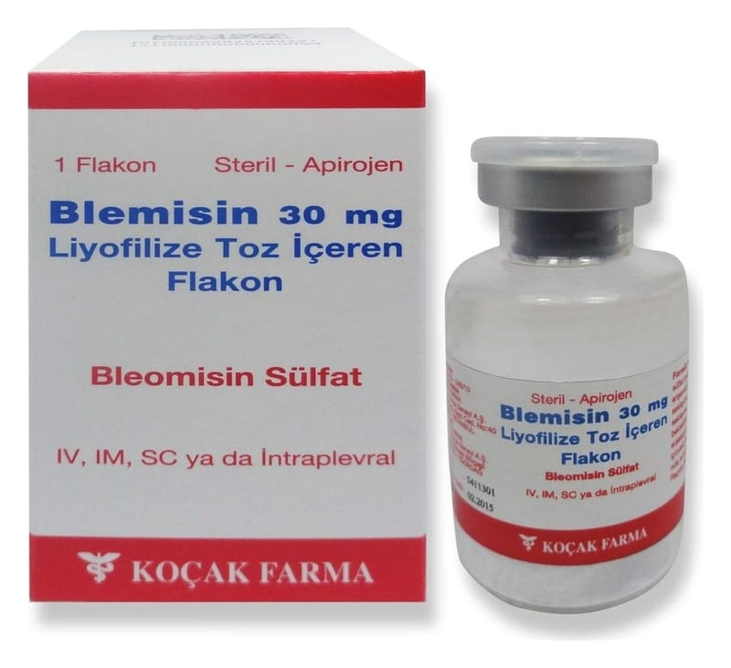

Blemisin 30 mg Liyofilize Toz İçeren Flakon, 1FLAKON

Ne için kullanılır
KT · Bölüm 1• BLEMİSİN, birçok kanser türlerinin tedavisinde kullanılan, Streptomyces verticillus isimli bir bakterinin özel bir türü tarafından üretilen bir proteinden elde edilir.
• BLEMİSİN, antineoplastikler olarak bilinen ilaç grubuna dahil sitotoksik bir antibiyotiktir. Kanser hücreleri (kanserli doku) içine girerek onların büyümelerini engeller. Bu durum BLEM İSİN'i kanser tedavisinde etkili bir ilaç yapmaktadır. • BLEMİSİN, yassı hücreli kanser olarak isimlendirilen ve ağız, burun, cilt, rahim ağzı ve dış genital bölgeyi etkileyen kanserlerin tedavisinde kullanılır. • BLEMİSİN, Hodgin hastalığını içeren diğer malign lenfoma, karın içi boşluktaki diğer kanserlerin ve testis kanserinin tedavisinde kullanılır. • BLEMİSİN ek olarak, malign melanoma (bir tür cilt kanseri), tiroid, akciğer ve mesane kanserinin tedavisinde de kullanılmaktadır. • BLEMİSİN diğer kanser ilaçlarıyla birlikte kullanılabilir.